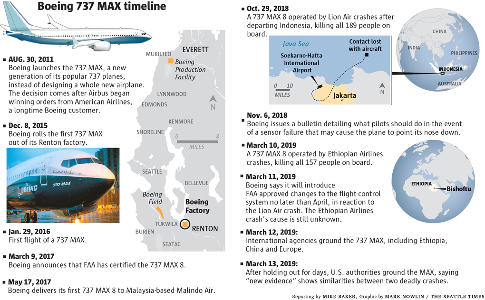

The 737 family has long been a pioneer in improving safety and reliability.
The design of the 737 MAX family aircraft benefits from refinements such as the streamlined wingtips "winglets" - an advanced technology developed by Boeing that reduces fuel consumption and CO2 emissions by at least 14% compared to 737 Next Generation (NG). Other changes include LED landing, taxi and runway lights, as well as a newly designed electronics compartment.
The 737 MAX will increase the range of the 737 NG by displaying a range of over 6,510 kilometers, or 629 to 1,055 kilometers more than the 737 NG. The 737 MAX is also equipped with the latest generation quiet engines that help reduce its noise footprint by up to 40%.
By working closely with airlines and regulators, Boeing has developed and implemented thousands of features that improve the safety and efficiency of the 737 Family aircraft, resulting in an increasing safety record at each new generation.
The 737 is also an extremely reliable aircraft. In February 2019, the three-month average on-time performance of the 737 Next-Generation family, all variants combined, was 99.7%. In other words, 99.7% of all Boeing 737 NG flights are ready for takeoff within 15 minutes of the scheduled time. In February 2019, the on-time performance of the 737 MAX Family aircraft was 99.5%.
Boeing designed the 737 MAX with pilots in mind. This is why pilots from customer companies have been integrated into the design team of this aircraft.
The display technology and instrumentation of the 737 MAX is state-of-the-art. Based on feedback from the 787 and previous programs, the screens displaying the MAX's primary flight data include an enriched display of the sky-ground separation line which allows the crew to have improved situational awareness, an essential factor in aviation safety.
The latest in this technological evolution, the screens of the 737 MAX incorporate all the key characteristics of the previous programs.